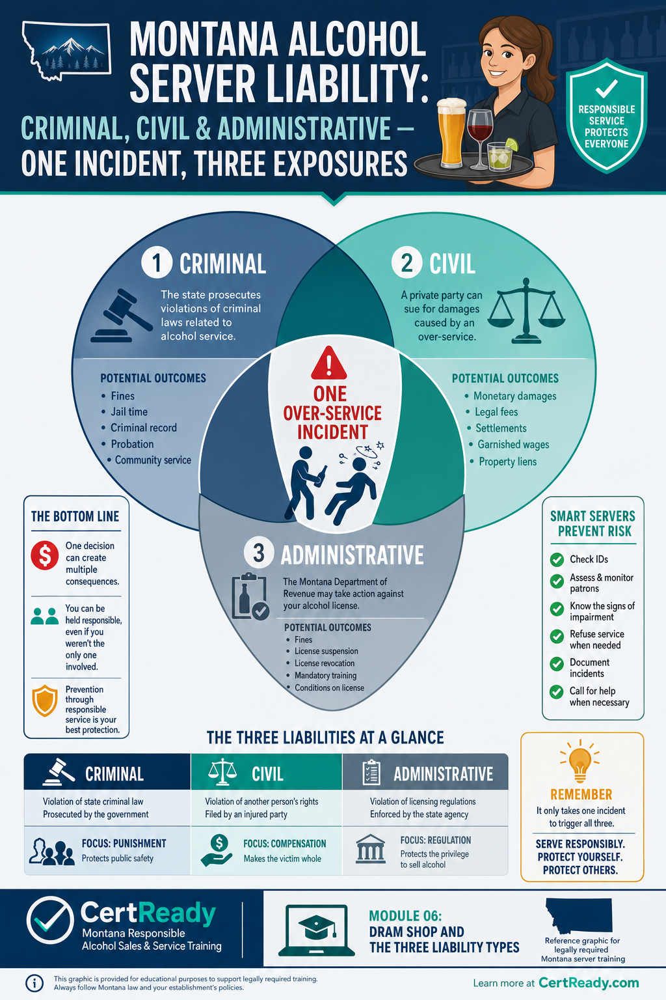

Dram Shop and the Three Liability Types
MCA 27-1-710 three-trigger framework, $250K caps, the 180-day notice deadline, and the 2-year statute of limitations
What you'll learn
- K9: Three liability types: criminal, civil, administrative
- K10: Montana dram shop (MCA 27-1-710): three triggers, damage caps, notice, SOL
- P7: Apply the three-trigger test to a real-world over-service scenario
When a server's mistake causes harm in Montana, three different legal systems can each take a swing at the licensee. They are independent, so any combination can happen at once.
The three types
- Criminal. The state charges the licensee or the server with a misdemeanor or felony. Examples: sale to a minor (MCA 16-6-305) or service to an obviously intoxicated person who causes a fatal crash. Penalties: fines, jail time, or both.
- Civil. A third party (the injured driver, the family of a victim) sues for damages under the dram shop framework (MCA 27-1-710). This is where the big-money exposure lives.
- Administrative. Montana CARD takes action against the license itself: progressive fines under ARM 42.13.101, suspension, or revocation. The license is the bar's ability to keep operating.

One incident can trigger all three. A server who knowingly serves a visibly intoxicated customer who then injures someone could face: • A criminal charge against the server personally • A civil dram-shop suit against the licensee • An ARM 42.13.101 license penalty against the bar Each runs on its own track and timeline. The criminal case might wrap in months; the civil suit can take years and seek hundreds of thousands of dollars; the administrative action can come from a single CARD compliance check the same week.
MCA 27-1-710 is the EXCLUSIVE remedy for civil claims arising out of alcohol service in Montana. A plaintiff cannot go around the dram-shop statute by suing under general negligence or some other theory. The statute also limits when liability attaches: only when one of three specific triggers is met.
The three triggers (MCA 27-1-710(2))
- Underage sale without a reasonable effort to verify age. Sold to a person under 21 AND the server did not make a reasonable attempt to determine the buyer's age (didn't check ID, or saw an obviously fake ID and ignored it).
- Service to a visibly intoxicated person. Sold or served to a person visibly intoxicated AND the server knew or should have known.
- Forced or coerced consumption / alcohol-content fraud. Server forced or coerced the customer to consume, or claimed the beverage contained no alcohol when it did.
![Three-pillar dram-shop trigger infographic (Montana MCA 27-1-710(4) - the three civil-liability triggers). Three vertical pillars side-by-side, each labeled with an icon and a one-line description. Use EXACTLY these three triggers, in this order: Pillar 1 (ID-card icon) - 'Sale to an UNDERAGE person WITHOUT a reasonable attempt to verify age.' Pillar 2 (intoxicated-customer / figure-leaning icon) - 'Sale or service to a VISIBLY INTOXICATED person at the time of service.' Pillar 3 (gavel / coercion icon) - 'FORCED or COERCED consumption, OR fraud about the contents of the drink.' Header above all three pillars: 'MCA 27-1-710 - any ONE trigger creates civil exposure.' Footer note: 'Post-service BAC, post-service behavior, and special-promotion evidence are barred from the analysis (subsection (6)). Notice must arrive within 180 days of service (subsection (8)); damage caps at $250,000 noneconomic + $250,000 punitive (subsection (10)).' Brand colors. Used as Module 6 hero graphic.](../../img/MT-ALCOHOL-M06-s2-c2.png)
MCA 27-1-710(2) (paraphrase, not verbatim): A person or entity that furnishes alcoholic beverages may not be found civilly liable under any other statute, theory of recovery, or common-law claim, except as provided in this section (i.e., only when one of the three triggers above applies). Routine service to a customer who later causes injury is NOT, by itself, dram-shop liability.
What 'reasonable effort to verify age' means. Trigger #1 lets the bar off the hook on minor-sale liability if the server made a reasonable check. Reasonable means: • Asked for and inspected an acceptable ID (per ARM 42.13.901(1)) • Confirmed the photo matched • Did the DOB math • Acted on red flags if any showed up If you carded carefully and the customer used a good-quality fake ID that fooled you, MCA 27-1-710(2)(a) protects the bar. The customer using the fake ID carries the criminal liability under MCA 16-6-305. The defense disappears if there's evidence you didn't check at all or ignored an obvious tell.
What 'visibly intoxicated' means in court. Trigger #2 turns on what the server knew or should have known at the moment of service. Plaintiffs argue the customer showed observable cues of impairment: slurring, stumbling, repeating, glassy eyes, mood swings. The bar's defense is the incident log + employee training records: • "Our server was trained on the Montana standard." • "Our incident log shows we cut off two other customers that night." • "We did not observe visible impairment in the named customer." Without records, the bar's defense becomes a he-said-she-said.
Caps and timeline (MCA 27-1-710(10)–(11))
- $250,000 cap on noneconomic damages per event (pain, suffering, loss of consortium)
- $250,000 cap on punitive damages per event
- Economic damages are NOT capped (medical bills, lost wages, future earnings)
- Plaintiff must give certified-mail notice within 180 days of the sale or service. Missing the 180-day window means losing the dram-shop claim.
- 2-year statute of limitations from the date of the sale or service to commence the civil action
Why economic damages aren't capped. A medical bill is a real number, not a discretionary jury award. If a victim has $1.2 million in lifetime medical care from a crash, that figure goes into the verdict regardless of the noneconomic-damages cap. The $250K caps only limit pain-and-suffering and punitive awards. For a serious crash, the economic damages alone can dwarf the caps.
MCA 27-1-710(6): banned evidence. When deciding whether the customer was visibly intoxicated AT THE TIME of service, the jury may not consider: • The customer's later BAC (e.g., the 0.18 reading at the crash scene three hours after they left) • Signs of intoxication that appeared after they left • Post-service conduct (a fight at a different bar, the crash itself) • That the bar was running happy hour • Hypothetical-BAC reconstructions by experts The test is what the server saw and reasonably inferred at the moment of service. This is one of the strongest defenses in Montana - but it only works if the bar has the records to back up what they observed at the time.
Most servers never see a dram-shop case. The ones who do experience it as a slow-motion process that starts months after the incident and stretches over years.
Typical timeline
- Day 0: Incident happens. Customer leaves the bar; later that night someone is injured.
- Days 1–60: Police investigate the underlying crash or injury. Plaintiff hires an attorney.
- Within 180 days of the incident: Plaintiff's attorney sends certified-mail statutory notice to the licensee. Notice triggers the bar's insurer; insurer assigns defense counsel. Notice served after day 180 forfeits the dram-shop claim.
- Days 180–365: Discovery. Plaintiff requests the bar's incident log, employee training records, surveillance video, receipts, refusal log, comp slips, anything that documents the night.
- Months 12–24: Depositions. The server who poured the drinks is deposed. Bar manager is deposed. Other servers and patrons may be subpoenaed.
- Months 12–24: Mediation or settlement talks. Most cases settle here, often within insurance limits.
- Months 18–24+: If no settlement, jury trial. The server testifies about what they observed at the time of service.
What the bar's defense rests on at trial. Two things, almost always: • The incident log - contemporaneous notes that the bar refused other customers, monitored the room, knew the standard, and didn't see visible impairment in the named customer. • The training records - proof that the server who poured the drinks was certified RASS-trained, knew the cues, and applied them. Without either, the case becomes a credibility contest. With both, the bar is in a much stronger position to defend the claim, sometimes before trial.
The insurance side of a dram-shop claim. Most Montana licensed establishments carry general liability coverage that includes a liquor liability endorsement (sometimes a separate policy). The 180-day notice is the trigger event for the carrier - once the bar receives certified-mail notice, the carrier assigns defense counsel and a claims adjuster within days. The bar's job between notice and trial: • Preserve every piece of evidence from the date of service: receipts, time-stamped surveillance, the incident log, the server's training certificate, and any text messages or emails about the customer that night. • Avoid contact with the injured party or their family.
Any communication runs through defense counsel. • Don't issue refunds, apologies, or sympathetic statements that plaintiff's counsel can read aloud at trial as an admission. "We're so sorry, we should've cut him off" is the worst thing a manager can say after a crash. • Cooperate fully with defense counsel: depositions, document production, sworn statements. Stalling or sandbagging is the fastest way to lose insurance coverage. The carrier's incentive is settlement within the $250K noneconomic + $250K punitive cap unless economic damages (medical, lost wages) push the case much higher.
A well-documented bar with strong training records can sometimes resolve a dram-shop case for a fraction of the cap. A poorly documented bar with sloppy serving practices will often settle near the cap on the carrier's recommendation.
Dram-shop timeline at a glance. From sale to verdict, a typical Montana dram-shop case follows this rough timeline: • Day 0: Sale or service to a customer who later causes injury. (The clock for both the 180-day notice deadline and the 2-year statute of limitations starts here under MCA 27-1-710(8).) • Days 1-30: Police investigate. If alcohol involvement is suspected, plaintiff's counsel may already be reviewing crash reports and identifying the bar. • Days 30-180: Plaintiff sends certified-mail statutory notice naming the bar. Notice must arrive by day 180 or the dram-shop claim is forfeited. • Day 181 - Month 24: Discovery phase.
Defense counsel reviews the bar's incident log, training records, surveillance, and receipts. Depositions of the server, manager, and witnesses. Settlement discussions. • By Month 24: Civil action must commence.
Either settle or file suit by the 2-year mark from sale/service. • After filing: Trial typically 6-18 months later. Judgment (or settlement). Damages capped at $250K noneconomic + $250K punitive per event under MCA 27-1-710(10); economic damages uncapped.
The earlier the bar's defense team has access to good documentation, the better the outcome. Train every server to write a brief incident-log entry for any near-cutoff or refusal, even when nothing dramatic happens. The boring entries are what save the bar in court - they show the standard was applied consistently, not selectively, the night of the incident.
A bar with 200 routine log entries and zero gaps tells a different story than a bar with one panicked entry written the day plaintiff's counsel sent notice.
Scenario 1: The customer who didn't appear intoxicated. A 23-year-old came into your bar at 8 PM, ordered three beers over two hours, didn't slur, didn't stumble, paid, and left at 10 PM. At 11 PM he caused a fatal crash a few miles away. His BAC at the scene was 0.18, and the family is suing the bar.
Scenario 2: The customer who clearly was intoxicated. A 240 lb regular drank seven 16 oz craft IPAs over three hours. By the seventh he was slurring, swaying when standing, and getting argumentative. The server poured the seventh anyway.
At midnight he T-boned another car at an intersection, severely injuring the other driver.
What every Montana bar should keep, every shift
- Incident log - refusals, ID rejections, customer behavior of note, manager interventions, with date, time, and server's initials.
- Training records - every server's RASS proof of training and date of training. Keep copies on file; Montana licensees maintain records of staff training under MCA 16-4-1005.
- Surveillance footage - most house policies retain at least 30 days. For incidents that may produce a dram-shop claim, retain indefinitely.
- Lyft / Uber reimbursement tabs - when the bar pays for a customer's ride home, the receipt becomes part of the night's defense file.
- House placard at every register and bar station (per MCA 16-3-301(6)) - and a photo of it on file.
- Refusal log - even the door bouncer's refused-entry list is admissible evidence that the establishment trains and enforces.
The hardest case for plaintiff's counsel is a bar that can produce: a refusal log showing the bar cut off three other customers that night, a training record showing the server poured was certified six months ago, and surveillance video showing the customer in question did not slur or sway at the bar. That combination can make a dram-shop claim much harder to prove.
The 180-day notice window under MCA 27-1-710(8) - what the bar will actually see. A dram-shop case in Montana starts with a certified-mail notice to the licensee. The notice must arrive within 180 days of the sale or service alleged to have caused the injury. The notice typically lists the date of service, the licensee's name, a brief factual description, and the law firm representing the injured party.
From the bar's perspective, the 180-day window is the practical hinge: if surveillance video is on a 90-day overwrite cycle (standard for most retail systems), the footage may already be gone by the time the notice lands. The incident log, the training records, the receipts showing the customer's tab, and the staff-list-for-that-shift are the artifacts most likely to survive the gap. The single best preservation move a bar can make is to keep video archived for at least 200 days for any night where any incident report was filed, and to keep incident logs for the full 5-year statute window. The cost of additional video storage is trivial compared to the cost of going into a dram-shop case with no footage of the customer at the bar.
The MCA 27-1-710(10) damage caps are not unlimited protection. Montana caps noneconomic damages at $250,000 per event and punitive damages at $250,000 - meaning a single dram-shop case carries an exposure ceiling on the soft-money portions of the judgment. What's NOT capped: economic damages. Lost wages, medical bills, life-care planning costs, and earning-capacity claims have no statutory cap. In a case involving a young adult plaintiff with a multi-decade earning horizon, the uncapped economic-damages line can run into seven figures all by itself.
The cap is a real benefit but it is not a magic shield; insurance carriers and risk managers price licensee policies on the uncapped economic-damages exposure, which is why a bar with multiple dram-shop notices in its history can see premium increases that exceed the entire ARM 42.13.101 fine schedule by an order of magnitude.
The 2-year statute of limitations under MCA 27-1-710(8) - what it means in practice. Once the 180-day notice window has run, the plaintiff has the rest of the 2-year statute from the date of sale or service to actually file the civil complaint. That 2-year window is the planning horizon for any licensee defense: in practice, dram-shop suits in Montana are most often filed in the 12-to-18-month range after the underlying event. From the bar's side, this means a dram-shop file that opened in May 2026 may sit quietly until late 2027 before discovery requests start arriving. The risk-management implication is that record retention isn't optional, and it isn't a 'one and done' exercise. A bar that purges incident logs annually has stripped its own defense before the suit is even filed.
Retention practices anchored to the 5-year record-retention floor under CertReady policy and Montana DOR audit practice are the floor; many licensee insurers require retention of all incident records, training certificates, and video archives for the full 5-year window as a condition of coverage at preferential rates. Managers should map the 5-year obligation to their retention systems explicitly: cloud video archive for surveillance, secured paper or digital binder for incident logs, and a separate training-certification log keyed to each individual server's RASS card number and date of completion.
Module 6 Quiz
Reviewer view shows the questions and correct answers immediately so you can evaluate the assessment content without submitting attempts.
Which is NOT one of the three liability types covered in Montana RASS?
Which of the following is NOT one of the three Montana dram-shop triggers?
Under Montana's dram-shop statute (MCA 27-1-710), which kind of damages is subject to a statutory cap and which is not?
In a Montana dram-shop case, the jury can use a customer's post-service BAC to prove they were visibly intoxicated at the bar.
A dram-shop plaintiff must serve certified-mail notice on the licensee within a limited window of the sale or service. Why does this rule make a contemporaneous incident log so valuable to the licensee?
Which of the following is the strongest piece of evidence in defending a Montana dram-shop case?
Are economic damages (medical bills, lost wages) capped under MCA 27-1-710?
Briefly explain why MCA 27-1-710(2) is described as 'restrictive' compared to other states' dram-shop laws.